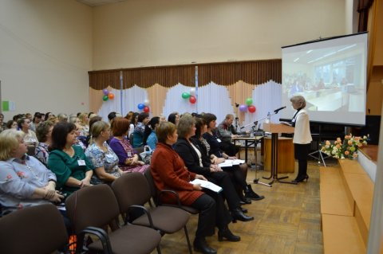
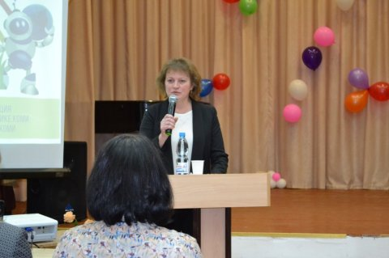
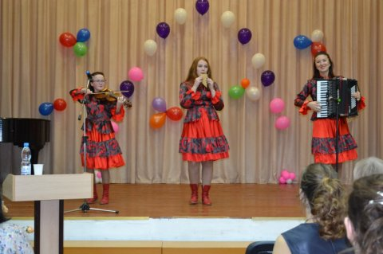
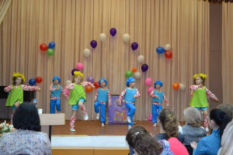
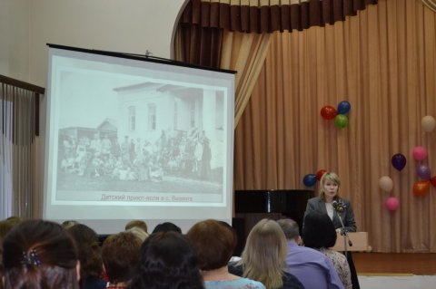
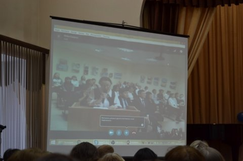
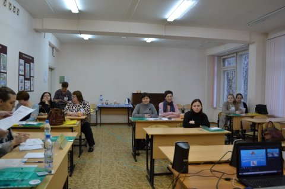
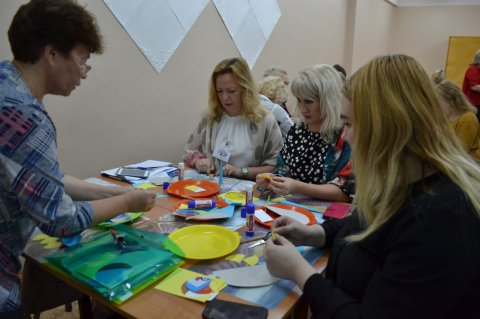
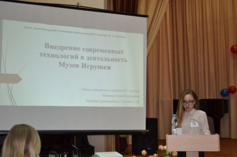

В соответствии с приказом Министерства образования, науки и молодежной политики Республики Коми от 13.09.2018 № 826 «О проведении на базе ГПОУ «Сыктывкарский гуманитарно-педагогический колледж имени И.А. Куратова» Международной научно-практической конференции «Игра и игрушка в пространстве детства: история и современность», с целью популяризации детской игры и игрушки как фактора социализации и инкультурации ребенка в современном обществе, 01 ноября 2018 г. проведена данная конференция, посвященная 100-летию дошкольного образования в Республике Коми, 35-летию Музея дошкольного образования Республики Коми (функционирующего на базе ГПОУ «СГПК»).
Конференция проводилась в рамках программы «Десятилетие детства». В целях совершенствования государственной политики в сфере защиты детства, учитывая результаты, достигнутые в ходе реализации Национальной стратегии действий в интересах детей на 2012–2017 годы, 2018–2027 годы объявлены в России Десятилетием детства (Указ Президента Российской Федерации № 240 от 29 мая 2017 года).
В конференции приняло участие более 200 человек из различных образовательных учреждений разных уголков России, стран ближнего зарубежья (ЛНР, Республика Азербайджан, Республика Казахстан, Республика Беларусь) и Турции. Иностранные гости представили свои доклады в он-лайн режиме.
Среди учреждений среднего профессионального образования участниками конференции стали преподаватели и студенты:
1. ГАПОУ Салаватский колледж образования и профессиональных технологий, Республика Башкортостан, г. Салават;
2. СПб ГБПОУ «Педагогический колледж №8», г. Санкт-Петербург;
3. ГБПОУ ЛО «Гатчинский педагогический колледж им. К.Д. Ушинского», Ленинградская область, г. Гатчина;
4. ГБПОУ ЯНАО «Новоуренгойский многопрофильный колледж», Ямало-ненецкий автономный округ, г. Новый Уренгой;
5. БУ ПО «Нижневартовский социально-гуманитарный колледж», Тюменская область, г. Нижневартовск;
6. БПОУ УР «Сарапульский педагогический колледж», Удмуртская Республика, г. Сарапул;
7. АУ ПО «Ханты-Мансийский технолого-педагогический колледж», Ханты-Мансийский автономный округ, г. Ханты-Мансийск;
8. ГПОУ «сыктывкарский гуманитарно-педагогический колледж имени И.А. Куратова», Республика Коми, г. Сыктывкар;
9. ГПОУ «Воркутинский педагогический колледж», Республика Коми, г. Воркута;
10. ГПОУ «Сыктывкарский автомеханический техникум», Республика Коми, г. Сыктывкар;
11. ГККП «Мангистауский гуманитарный колледж имени Мурын жырау Сенгирбекулы», республика Казахстан, г. Актау;
12. КГКП «Карагандинский гуманитарный колледж», республика Казахстан, г. Караганда;
13. Пинский колледж учреждения образования «Брестский государственный университет имени А.С. Пушкина», республика Беларусь, г. Пинск.
Также приняли участие педагоги и учащиеся средних общеобразовательных учреждений:
1. ГБОУ Петергофская гимназия императора Александра II, Санкт-Петербург, Петергоф;
2. МБОУ «Школа №9» г. Феодосия Республики Крым;
3. МАОУ «СОШ № 26», Республика Коми, г. Сыктывкар;
4. МОУ «Лицей № 1» г. Воркуты, Республика Коми.
Участниками от дошкольных образовательных учреждений России, Казахстана, Беларуси стали заместители директоров, старшие воспитатели, музыкальные руководители, педагоги дополнительного образования, инструкторы по физической культуре, учителя - логопеды, воспитатели, педагоги-психологи, учителя – дефектологи.
Республику Коми представили педагоги 69 детских садов.
На площадке ГПОУ «СГПК» функционировало 8 секций:
1. Современная игровая деятельность детей: теория и практика
2. Исторические аспекты детской игры
3. Игровые технологии в образовании
4. Потенциал игры и игрушки в системе реабилитации детей с различными отклонениями в развитии
5. Современная детская игровая продукция: за и против
6. Игровая среда современного детства
7. Игрушки и игровые пособия в жизни ребенка (студенческая)
8. Игры – познавательно и интересно! (студенческая)
Содержание деятельности секций было реализовано в разнообразных формах трансляции накопленного педагогического опыта, среди которых можно выделить: мастер-классы, проекты, видеообзор, интерактивные игры, выставки, стендовые доклады и многие другие.
В качестве экспертов работали:
1. УТОЧКИНА Елена Юрьевна, к.п.н., преподаватель ГПОУ «СГПК»
2. ЭМИХ Наталья Валерьевна, начальник отдела методического сопровождения дошкольного образования Муниципального казенного учреждения «Воркутинский Дом Учителя», г.Воркута
3. САБИНСКАЯ Ольга Альбертовна, директор МАДОУ «Детский сад № 104 общеразвивающего вида» г. Сыктывкар
4. ПРУЖИНСКАЯ Вера Борисовна, преподаватель ГПОУ «СГПК»
5. РОЧЕВА Ольга Ивановна, к.п.н., преподаватель ГПОУ «СГПК»
6. ВЕТОШКИНА Елена Леонидовна, старший воспитатель МАДОУ № 72 общеразвивающего вида» г. Сыктывкар
7. ГАЕВАЯ Елена Витальевна, заведующий отделением коррекционной и развивающей педагогики, преподаватель ГПОУ «СГПК»
8. ПАНЧЕНКОВА Кристина Валерияновна, победитель городского конкурса «Воспитатель года - 2015», воспитатель МАДОУ «Детский сад № 53 общеразвивающего вида», г. Сыктывкар
9. МАРТЫНЧУК Татьяна Александровна, победитель городского конкурса «Учитель года - 1998», зам.директора по учебно-производственной работе, преподаватель ГПОУ «СГПК»
10. ТКАЧУК Татьяна Анатольевна, к.п.н., доцент кафедры Дошкольного образования, Институт педагогики и психологии, ФГБОУ ВО «СГУ им. Питирима Сорокина», г. Сыктывкар
11. ХАБАРОВА Людмила Павловна, методист отделения коррекционной и развивающей педагогики, преподаватель ГПОУ «СГПК»
12. САЖИНА Светлана Дмитриевна, к.п.н., заведующий кафедрой общей и специальной педагогики, Институт педагогики и психологии, ФГБОУ ВО «СГУ имени Питирима Сорокина», г. Сыктывкар
13. ВАЛЕЕВА Наталья Ивановна, заведующий практикой отделения коррекционной и развивающей педагогики, преподаватель ГПОУ «СГПК»
14. ЕГОРОВА Елена Леонидовна, к.п.н., доцент кафедры Дошкольного образования, Институт педагогики и психологии, ФГБОУ ВО «СГУ имени Питирима Сорокина», г. Сыктывкар
15. ЗАБОЕВА Людмила Евгеньевна, зам. директора по УВР, МАДОУ «ЦРР-детский сад № 111» г. Сыктывкар
16. НЕНЕВА Елена Михайловна, методист дошкольного отделения, преподаватель ГПОУ «СГПК»
Все участники конференции выразили единодушное мнение в оценке актуальности рассматриваемой проблемы и отметили, что на современном этапе в эпоху выделения системы дошкольного образования в самостоятельную образовательную ступень и принятие ФГОС ДО особенно важно уделять внимание созданию благоприятных условий для полноценного проживания ребенком дошкольного детства, всестороннему развитию психических и физических качеств каждого.
Теоретические аспекты игровой деятельности, проанализированные авторами секционных докладов, рассматривались в контексте изучения предпосылок игрового процесса и сущности игры, выявления развивающей функции игры, рассмотрения игровой деятельности как фактора социализации и инкультурации детей, адаптации современных видов игровой деятельности, использования возможностей пространственной предметной развивающей среды и многие другие вопросы.
В практической части работы были представлены: мастер-классы по начальному техническому моделированию, интерактивные игры, видеообзор оборудования игровой развивающей среды, выставки и др.
Был представлен уникальный опыт применения разных технологий, форм, методов, средств в работе с дошкольниками, учащимися школ, студентами педагогических колледжей: квест–технология, игровые, социо-игровые технологии, пластилиновая мультипликация, ниткопись, использование фетровых игровых пособий, робототехнического конструктора нового поколения, кинетического песка и многие другие.
В свою очередь, преподаватели организаций СПО делились опытом работы по использованию игровых технологий в рамках преподавания социально-гуманитарных дисциплин, музыкально-интеллектуального марафона при организации промежуточного контроля знаний студентов в системе среднего профессионального образования и т.п.
Доклады носили практико-ориентированный характер, отличались глубиной, качеством, использованием наглядного материала. Среди представленных работ – авторские игры, которым предложено запатентовать свою продукцию.
Отдельно выделялись аспекты использования народной игрушки и ее благотворное влияние на развитие ребенка: куклы-обереги, берестяные и коми народные игрушки. В ходе работы возникла дискуссия о влиянии военных игрушек в жизни ребенка. Педагоги обсудили, как использовать военную игрушку без агрессивного воздействия.
Интерес со стороны слушателей вызвала информация о новой цифровой лаборатории Наураша как средства исследовательской деятельности дошкольников. Вниманию слушателей была представлена коллекция самодельных бизибордов как доказательства плодотворной работы с родителями.
Что касается современной игрушки, докладчики отметили, что существующие и тиражируемые сегодня игровые предметы, с одной стороны, выступают средством стереотипной аутостимуляции и вызывают у детей незамедлительное желание примерки готовых образов взрослости, направленное не на освоение опыта и воспроизведение жизненных ситуаций, а на «формальную симуляцию их переживания». С другой стороны, игрушка выступает практически единственным культурным средством, которое, начиная с раннего возраста ребенка, становится инструментом его автономной деятельности.
Эксперты считают, что представленные работы педагогов дошкольных образовательных организаций заслуживают обобщения их педагогического опыта. Участники конференции обменялись контактами по дальнейшему сотрудничеству и выразили желание сделать конференцию традиционной и организовывать не только защиту педагогического опыта, но и практиковать мастер-классы, которые воспитатели республики готовы проводить. Также отметили эффективность работы смешанной секции, где представили свои исследования студенты колледжей г.Сыктывкара, г.Воркуты, г.Караганды, г.Актау (Республика Казахстан), г.Пинска (республика Беларусь) и другие. Отдельно функционировали две студенческие секции.
По итогам выступлений нескольких секций эксперты выделили и наградили дипломами следующих студентов:
ДИПЛОМ 3 СТЕПЕНИ получили:
1.Моторина Ольга Ивановна, Зайцева Яна Викторовна, студентки 3 курса КГКП «Карагандинский гуманитарный колледж» (Научный руководитель: Петрова Татьяна Александровна, преподаватель психологии и педагогики);
2.Сажина Виктория Александровна, студентка 4 курса отделения коррекционной и развивающей педагогики ГПОУ «СГПК» (Научный руководитель: Валеева Наталья Ивановна);
3. Костылева Алена Андреевна, студентка 2 курса музыкального отделения ГПОУ «СГПК» (Научный руководитель: Лаврик Галина Генриховна);
4. Минина Елена Вадимовна, студентка 4 курса отделения туризма ГПОУ «СГПК» (Научный руководитель: Гурьева Елена Николаевна);
5. Джаналиева Саида Сансызбаевна, студентка 2 курса (дошкольное воспитание и обучение) ГККП «Мангистауский гуманитарный колледж имени Мурын жырау Сенгирбекулы», г. Актау, РЕСПУБЛИКА КАЗАХСТАН (Научный руководитель: Нурмухамбетова Клара Хайрлиевна, заместитель директора по учебно-производственной работе, отличник образования Республики Казахстан);
6. Островская Анна Алексеевна, студентка 4 курса (дошкольное образование) Пинский колледж учреждения образования «Брестский государственный университет имени А.С. Пушкина», г.Пинск, РЕСПУБЛИКА БЕЛАРУСЬ (Научный руководитель: Островская Лилия Владимировна, магистр педагогических наук, преподаватель).
7. Сабиханова Узилхан Сабырқызы, студентке 3 курса (дошкольное воспитание и обучение), Командровская Вера Валериевна Мангистауский гуманитарный колледж имени Мурын жырау Сенгирбекулы, г. Актау, РЕСПУБЛИКА КАЗАХСТАН (Научный руководитель: Нурмухамбетова Клара Хайрлиевна, заместитель директора по учебно-производственной работе, отличник образования Республики Казахстан);
9. Михайлова Светлана Васильевна, студентка 4 курса отделения заочного обучения ГПОУ «СГПК» (Научный руководитель: Рочева Ольга Ивановна, к.п.н.);
10. ЧУХЛОВА Лаура Николаевна, студентка 3 курса дошкольного отделения ГПОУ «СГПК» (Научный руководитель: Ненева Елена Михайловна);
ДИПЛОМ 2 СТЕПЕНИ:
1.Колегова Богдана Александровна, студентка 4 курса отделения коррекционной и развивающей педагогики ГПОУ «СГПК» (Научный руководитель: Хабарова Людмила Павловна);
2.Гилева Анна Ивановна, студентка 4 курса музыкального отделения ГПОУ «СГПК» (Научный руководитель: Уточкина Елена Юрьевна, к.п.н.);
3. Косолапова Анна Евгеньевна, студентка 3 курса дошкольного отделения ГПОУ «СГПК» (Научный руководитель: Сопова Майя Николаевна, канд.культурологии);
4. Семяшкин Алексей Александрович, студент 3 курса отделения дополнительного образования ГПОУ «СГПК» (Научный руководитель: Бугаева Елена Энгельсовна, к.п.н.).
5. Сердитова Светлана Николаевна, студентка 4 курса отделения заоного обучения ГПОУ «СГПК» (Научный руководитель: Мартынчук Татьяна Александровна);
6. Лихачева Валерия Александровна, студентка 4 курса музыкального отделения ГПОУ «СГПК» (Научный руководитель: Такмакова Елена Николаевна).
ДИПЛОМ 1 СТЕПЕНИ:
1. Кузнецова Валерия Игоревна, студентка 4 курса музыкального отделения ГПОУ «СГПК» (Научный руководитель: Минина Людмила Борисовна);
2. Косолапова Анна Евгеньевна, студентка 3 курса дошкольного отделения ГПОУ «СГПК» (Научный руководитель: Пахомова Татьяна Александровна);
3.Зайкова Василина Николаевна, студентка 4 курса дошкольного отделения ГПОУ «СГПК» (Научный руководитель: Сопова Майя Николаевна, канд.культурологии);
4. Афукова Мария Александровна, студентка 2 курса музыкального отделения ГПОУ «СГПК» (Научный руководитель: Ледниченко Лидия Андреевна);
5. Игнатов Денис Евгеньевич, студент 4 курса отделения дополнительного образования ГПОУ «СГПК» (Научный руководитель: Лысенкова Екатерина Леонидовна).
В рамках конференции Коми региональная общественная организация «Союз мастеров декоративно-прикладного искусства и народных художественных промыслов» представила Выставку авторской и народной куклы и игрушки разных лет и из различных материалов: текстиль, береста, керамика, дерево.
Были представлены выставки игрушек из бересты, детских работ из глины, анти игрушки, современных методических пособий для развития сенсорики детей. Педагоги пополнили экспозицию Музея игрушки народными куклами-оберегами.
В течение дня были организованы экскурсии в Музей Дошкольного образования Республики Коми и международный Музей игрушки.
По итогам конференции планируется электронный выпуск сборника научных статей участников.
        